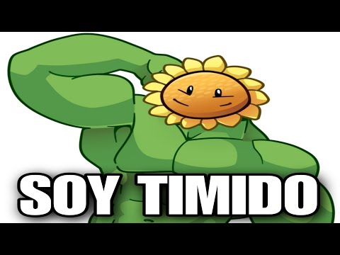

Para entender la historia de Five Nights at Freddy's hay que olvidarse que estos son juegos y quiero que tomen realmente a esta saga como lo que es. ¿Terror? Sí, pero sobre todo, ciencia ficción. Antes de comenzar, quiero decir que esta cronología la realizamos entre 3 youtubers conocidos de Five Nights at Freddy's y yo. Por lo tanto, agradecería que si les gusta el contenido de este juego vayan a visitar sus canales. Ahora sí, empecemos. ¿Qué pasaría si dos amigos se abren una pizzería? Esa es la primera pregunta que hay que plantearnos. Lo normal sería que todo vaya medianamente bien con algún tipo de problemas, pero nada saldría más allá de eso. La pregunta cambia completamente si nos preguntamos ¿Qué pasaría si Henry y William abren una pizzería? ¿Quiénes son estos personajes? En un principio, grandes amigos. Henry, por un lado, era un ferviente y talentoso mecánico que cuidaba a su única hija, Charlie. No sabemos nada de su esposa, ni siquiera si tiene a alguien más en su familia. Y por el otro lado, William Afton. La familia de Afton estaba compuesta por 5 miembros. William, una persona con mucho dinero y con buena capacidad para la mecánica. Su hija menor, Elizabeth. Este pendejo que no sabemos el nombre, pero llora todo el tiempo, así que vamos a ponerle Crying Child. Michael Afton, su hijo mayor y su esposa, de quien no se sabe nada. Estos dos personajes unieron sus capacidades de mecánicos y con el buen capital que tenía William ahorrado, entre los dos abrieron un restaurante. Así fue como entre los años 1980 a 1982, supuestamente, Fredbear Family Dinner abrió sus puertas. La principal atracción de este lugar eran los animatrónicos. ¿Qué son? Bueno, básicamente eran robots que podrían ser controlados tanto por ellos mismos como por personas o por almas. Estos animatrónicos habían sido desarrollados por los dueños del restaurante, pero Henry destacó un poco más debido a que hizo un complejo sistema de resortes que permitía a la persona usar estos trajes. Solamente que tenía que ser extremadamente cuidadosa, ya que de lo contrario el mecanismo del mismo se activaría y la persona que esté dentro seguramente quedaría lastimada. Estos trajes híbridos darían a luz en un principio a su principal éxito, Fredbear y Spring Bonnie. Dos animatrónicos que durante esos años 80s habían hecho furor y tan bien les estaba yendo a estos dos amigos que la competencia empezó a llegar. Y es por eso que a unos pocos meses de la salida de Fredbear Family Dinner llegaría su competencia, Fazbear Entertainment, pero que esta no sería relevante hasta en un futuro. En paralelo a estos hechos, empezaban a haber roces entre la dupla principal, ya que William no solamente había abierto el restaurante para comer, sino que detrás de sus intenciones había algo mucho más oscuro, matar gente. Es por eso que en una fecha que desconocemos, William creó un nuevo local, Circus Baby Pizza World, y es en este donde presentaría sus nuevos animatrónicos, los Funtime. Estos animatrónicos estarían hechos bajo la empresa Afton Robotics, que como podrán imaginar, esta empresa era de William. Aunque los Funtime no eran animatrónicos normales, si bien tenían características muy innovadoras con respecto a los primeros trajes híbridos, estos Funtime estarían creados específicamente para matar. Una inteligencia artificial muy avanzada, poder abrir diferentes partes de su cuerpo y la posibilidad de hablar. Claramente no tenían una buena intención, pero a William se le volvería todo en contra cuando el mismo día de la inauguración de su local, a pesar de sus advertencias a Elizabeth, esta entró igual al cuarto donde estaban los animatrónicos para ver si estaba su robot favorito, Baby. Y luego de que este animatrónico le ofreciera un helado para hacer que se acercara a ella, la mata. O bueno, no tanto. Mientras a todo esto, recordemos que William pensaba que ya todos los niños estaban capturados dentro de los animatrónicos, debido a que la apertura de su local había sido completamente exitosa. Entonces alerta a toda la gente de una fuga de gas para que así tengan que evacuar el local y él poder ir a ver su recompensa. Cuando William va a ver si sus animatrónicos habían capturado niños, sí, así es, habían capturado niños. Que eso lo sabemos debido a que en los planos de los animatrónicos aparecen cuerpo dentro de estos robots. Pero también William se daría cuenta de que su animatrónico principal había matado a Elizabeth. O en realidad, su hija estaba tomando el control de Baby debido a que los ojos del animatrónico pasarían de ser azules a como los tenía su hijita, verdes. Por supuesto que William al enterarse de todo esto no sabe qué hacer y es por eso que decide encerrarla en Circus Baby Entertainment, un lugar ubicado debajo de Circus Baby. Tras el cierre de Circus Baby y la incertidumbre de lo ocurrido con su hija menor, estas cosas empezarían a afectar a William Afton, dando comienzo a su declive. Por eso, luego del fracaso de Circus Baby, éste vuelve a pedirle ayuda y trabajo a Henry, que a pesar de todos los problemas que había tenido con su anterior socio, le da trabajo de administrador o mecánico, por eso se lo puede ver colocándole la cabeza de Fredbear a uno de los empleados de Fredbear Family Dinner. Durante estos meses, de un año que suponemos que es 1883, Henry creó y anunció otros animatrónicos por la televisión, que serían Freddy, Foxy, Chica y Bonnie. Por supuesto que William, al ver que había creado más animatrónicos, haría crecer la tensión con su nuevo jefe, pero lo que realmente llevaría a William a ponerse de un tono violeta sería la muerte de su hijo menor, el pendejo que llora, Crying Child. ¿Se acuerdan de Mike, el hijo mayor de William? Bueno, este personaje asustaba de manera sobre medida a Crying Child y mientras ésta atormentaba a su único hermano chico, William protegía de sobre manera a su hijo menor, poniendo cámaras por toda la casa y dándole un peluche creado por él mismo para que pueda hablarle y sentirse cómodo. Todo esto, a pesar del comportamiento psicópata de William, serviría para vigilar a su hijo menor y así que no se escapara a ver a los animatrónicos debido a que a Crying Child le fascinaban. Pero William, al haber creado con Henry los dos primeros trajes sabían lo que podían hacer y lo danino que eran, por eso las medidas de sobreprotección. Pero ahora vamos a remontarnos a una teoría entre Five Nights at Freddy's 4 y The Twisted Ones, el primer libro. Supuestamente, Five Nights at Freddy's 4 ocurriría en las pesadillas de Crying Child, pero la verdad es que no, las pesadillas esas que ve son reales y no un mal sueño de este niño, ya que son parte de un plan muy macabro de su padre. Verán, en la novela de The Twisted Ones, William crea un disco que hace tener alucinaciones con animatrónicos, exagerando su forma, su tamaño, etc. Algo así como la película de Batman donde el espantapájaros tiene un spray que te hace sobredimensionar tus miedos. ¿Y cómo se relaciona esto con el juego? El tema de las alucinaciones, no Batman, no tiene nada que ver Batman acá. Bueno, tenemos que remontarnos a Five Nights at Freddy's Ultimate Custom Night, en donde los animatrónicos Nightmares aparecen en este juego, pero en este juego controlamos a William, entonces es imposible que William logre saber con exactitud cómo son estos animatrónicos si es que en realidad son las pesadillas de su hijo menor. En otras palabras, ¿cómo sabes exactamente las pesadillas de otras personas? Con lo cual, si volvemos al primer libro, nos introducen que William creó discos ilusorios para hacer creer a la gente cosas que realmente no hay, y esto lo utilizaría con Crying Child para hacer que se aleje definitivamente de los animatrónicos. Por eso es que tampoco nunca lo vemos regañar a su hijo mayor por maltratar a su hermanito, debido a que este le estaba generando un trauma con los animatrónicos, cosa que a William le servía, aunque el error de William fue confiar demasiado en Michael, porque este no sabía dónde estaba el límite de la broma, ya que Mike asustaba a su hermano solamente por diversión, y el problema se desataría en ese año 83, en el lugar donde había comenzado y terminado todo, Fredbear Family Dinner. Mike y sus amigos llevan a Crying Child por la fuerza al restaurante para seguir molestándolos con los animatrónicos en el día de su cumpleaños, y siguiendo con la broma, lo ponen en la boca de Fredbear simulando que se lo iba a comer, y desgraciadamente no solo simuló eso. Como había dicho en un principio, el sistema de resorte de Henry era sensible, por lo que al introducir un niño dentro de la boca, el traje se cerró en la cabeza de Crying Child, que luego de eso, el mini Afton entra en un estado de coma donde están todos los animatrónicos que él conocía y el peluche que le había regalado William, donde en esta pantalla se da a entender como que su padre le está dedicando las últimas palabras a su hijo, pidiéndole que lo perdone, y diciendo dos frases que quedarían para muchísimas teorías. Vos estás roto, yo te reconstruiré. Por supuesto que esto lo dice debido a que a partir de la muerte de Elizabeth, él sabía que de alguna forma los animatrónicos lograban tomar el alma de la persona y adaptarla a su cuerpo, o por lo menos ahí alma y animatrónico convivían en un solo cuerpo. Una curiosidad de esta parte de la historia es que como estamos en 1983, si recorremos la casa de los Afton, nos vamos a encontrar con un cuarto que da a entender que es de una niña, y quién era la única niña que tenía la familia Afton, Elizabeth Afton. Por lo tanto, antes de ese 1983, la hija de William ya estaba dentro del cuerpo de Baby.Debido a la mordida del 83, las muy malas reputaciones y rumores que despertó que un animatrónico había matado a un niño, la gente había dejado de ir a Fredbear Family Dinner. Pero el problema de Henry no solamente estaría en su restaurante, sino que tenía un problema aún mayor con William, que seguramente le iba a culpar a este de la muerte de su hijo, ya que recordemos que el sistema de resorte de estos trajes había sido obra de Henry principalmente. Y aparte, William no solamente había sufrido un daño mental increíble por la muerte de sus dos hijos menores, sino que había comenzado un plan de venganza y de investigación del remanente. ¿El qué? El remanente, una sustancia que segregaba al animatrónico si se prendía fuego una vez que tenía un alma dentro. Como sea, el remanente se podría extraer de los animatrónicos y colocar en otros, por eso la única forma de destruir a un alma dentro de uno de estos robots es destruyendo todo el remanente. Por más de que si el remanente de una persona estaba en tres animatrónicos distintos, con que se destruya solamente uno, el alma de esa persona seguía quedando en los otros dos. Creo que se entendió, el temor de Henry por su vida y la de su propia hija estaba muy justificado y es por eso que crea un animatrónico especializado en proteger, Puppet. Pero por más animatrónicos que haya, si a este lo encierran en una caja de regalos, no serviría para nada. Y es por eso que un día entre los años 1983 a 1985, William tendría la oportunidad de vengarse de su ex amigo y una vez que se encuentra con Charlie a las afueras del restaurante, este la mata. Luego de que Puppet pudiera escapar de donde estaba encerrada, sale a buscar a Charlie a pesar de que la lluvia obviamente dañó todos sus circuitos. Pero ya era demasiado tarde y este animatrónico decide pasar los últimos momentos de Charlie a su lado abrazándola. Pero esto aparte de ser un simbolismo, lo que está haciendo Puppet es que el alma de Charlie vaya a parar dentro de este animatrónico, por lo que sí, Puppet tiene mitad animatrónico, mitad Charlie. Henry, al enterarse de la muerte de su hija, empezó una investigación judicial que nunca pudo llegar a nada, ya que William, o mejor dicho, Purple Guy, había logrado salirse con la suya y debido a esto, Henry desaparece por completo vendiendo todos los animatrónicos a Fazbear Entertainment, la empresa que había estado esperando todo este momento para tener animatrónicos, ahora salía a la luz. Mientras todo esto pasaba, si bien la investigación de la policía no había llegado a ningún puerto, dudaban de William y es por eso que este se alejaría un tiempo de situaciones de peligro, ya que no quería ser atrapado. Por eso le cuenta a Mike que su hermana seguía viva dentro del cuerpo de un animatrónico y que tenía que ir a buscarla, que estaba en el subsuelo de Circus Baby. Mike no entendió absolutamente nada de lo que su padre le dijo, pero aún así le hizo caso ya que él se sentía culpable por la muerte de su hermano más chico y haría lo que sea para salvar a su hermana. Es por eso que este baja a las profundidades de Circus Baby Pixar World y se encuentra con lo que su padre le había dicho, su hermana era un animatrónico. Desde ya que Mike tenía las mismas dudas que su padre en cuanto a cómo sacar a su familiar de ahí, pero eso lo resolvería Baby sola, porque tras seguir al pie de la letra todo lo que le decía su supuesta hermana, los animatrónicos Funtime se fusionarían en uno solo dando lugar a una nueva entidad, Ennard. Y este da a entender que la única manera de salir de Circus Baby Pixar World era hacerlos todos juntos, pero en el cuerpo de Michael. ¿Y cómo harían esto? Bueno, recordemos que este lugar también es el laboratorio de su padre y acá es cuando Michael descubriría la Scooper, una máquina que serviría para extraer el remanente de los animatrónicos. Bueno, esa misma máquina le inyectaría Ennard a Mike y tras pensar que estaba muerto, se confirma que claramente no. Lo que pasaría en las siguientes horas es que Mike expulsa todos los animatrónicos de su cuerpo debido a que no aguantaba toda esa cantidad de remanente. Y luego de que se desmayara al borde de la muerte, una voz, la voz de su hermana, le dice... Esto hace que Mike se levante y pueda estar vivo debido a que todavía en su cuerpo tenía remanente. Y como habíamos dicho, el remanente solamente puede destruirse si estaba todo junto, por lo que Mike y los animatrónicos Funtime estaban directamente relacionados. A pesar de esto, su hermana escapa junto con Ennard por las alcantarillas para luego dar paso a que la pantalla se apague y empieza a sonar un mensaje de Mike dirigido a su padre, terminando con la frase... Iré a buscarte. Volviendo a Fazbear Entertainment, ¿se acuerdan que esta empresa con la partida de Henry había comprado todos sus animatrónicos? Bueno, ahora en Freddy Fazbear Pizza, un local que cronológicamente debió haber estado hasta 1985 debido a que en una llamada de Fungi en Five Nights at Freddy's 2 durante la quinta noche hace referencia a que un restaurante había cerrado hacía un par de años, dos o más, un par. Y si sabemos que el restaurante de Five Nights at Freddy's 2 se funda en 1987, es muy fácil la cuenta que hay que sacar. Pero tampoco puede ser antes de 1983, ya que primero tiene que morir el hijo de William para que éste pierda completamente la cabeza y pase todo lo de Charlie. Por lo tanto, el primer Freddy Fazbear Pizza tendría que estar ubicado entre los años 1983 a 1985. Pero en este lugar pasarían una de las peores cosas. Luego de que suceda el incidente de dos empleados lastimados por usar los trajes híbridos, tanto a Fredbear como a Spring Bonnie los encierran y los dejan abandonados. Y aunque la empresa Fazbear Entertainment pudo encubrir este hecho, no pudieron tapar el incidente gigante que vendría. Debido a que estos dos empleados se lastiman, el local tiene que contratar más personal y es acá donde William aprovecharía para meterse como guardia de seguridad, buscar el traje de Spring Bonnie y en uno de los tantos cumpleaños de ese lugar, un 26 de junio de un año desconocido, este personaje deja de ser William para convertirse completamente en Purple Guy, asesinando a cinco niños. Cinco inocentes niños que debido a que la policía jamás pudo encontrar sus cuerpos se llamarían los niños perdidos o The Missing Childrens. Pero no es que estaban perdidos, sino que Puppet no iba a dejar que esto pasara de nuevo y por eso pone las almas de estos niños dentro de los animatrónicos y así podrían vengarse del hombre detrás del sacrificio. Estos niños serían Gabriel, Fritz, Susie, Jeremy y por último Cassidy. Luego de la supuesta desaparición de estos niños, el primer local de Fazbear entraría en una etapa de remodelaciones y tendría su gran apertura en 1987, el lugar donde transcurre Five Nights at Freddy's 2. En esta reapertura de Fazbear, entraría en juego un nuevo personaje, Jeremy Fiskeral, un guardia de seguridad que el juego lo hace pasar como el protagonista, pero el protagonista acá no es nada más ni nada menos que Fungi. Una persona misteriosa que no se sabe quién es, pero sí sabe todo lo que sucedió anteriormente, desde la muerte de los niños hasta que los animatrónicos persiguen a los guardias de seguridad, pero el chico del teléfono trata de decirte esto de la manera más liviana posible. A este restaurante vamos a llamarlo Freddy Fazbear Pizza 2. Tenía mucho más lujos que los anteriores, era más grande, más espacioso y sobre todo los animatrónicos eran distintos. Ahora ya la empresa tenía un conjunto de dos animatrónicos, los cinco viejos, los dos trajes híbridos y cuatro nuevos que serían los animatrónicos toys. Estos eran reversiones más chicas de Freddy, Bonnie y Chica, pero también estaban Mangle y Balloon Boy. Tenían el objetivo de ser mucho más amigables y contaban con el reconocimiento facial para identificar criminales. Es por eso que el asesinato de los cinco niños tiene que ocurrir antes de este segundo local, porque si no, ¿qué lógica tendría? Por supuesto que la empresa Fazbear Entertainment gastó una buena cantidad de plata en este lugar y no les saldría muy redituable este restaurante. A lo largo de las noches, Fungine nos va revelando ciertos acontecimientos y de la primera noche que tiene una voz calma o tranquila, llegamos a la última noche, donde su voz empieza a sonar de una manera mucho más nerviosa y preocupada. Jeremy entra un 8 de noviembre a trabajar en este restaurante y se va un 13 de noviembre, pero acá viene lo interesante. Recordemos que Puppet era Charlie y esta sabe que William había matado a cinco niños. Entonces decide devolverles la vida para que así puedan vengarse de su asesino y es acá donde entra el minijuego, en donde podemos ver a Freddy, Puppet y Purple Guy, los tres en una misma habitación y Purple Guy estaba ahí por una sola razón, robarse los trajes. Cosa que podemos deducir cuando la grabación de la última noche, Fungine dice esto. Por lo que ahora tiene más sentido y capaz que a Fungine se lo escucha tan agitado porque recordó lo que había pasado ese 26 de junio cuando alguien había entrado con el traje de Spring Bonnie a matar a cinco chicos. Sea como sea, en este restaurante pasa el hecho más confuso de todos, la mordida del 87. No se sabe bien cuál fue la razón o a quién, pero se supone que luego de que Fungine le diga ya que no se había matado a los cinco niños, se le ha dado cuenta de que el traje de Spring Bonnie pero se supone que luego de que Fungine le diga a Jeremy que si podía trabajar durante el turno de día, este fue mordido por algún animatrónico, cosa que nos enteraríamos recién cinco años después. Pero antes que cerrara este restaurante, la noche que Jeremy estaba trabajando en el día, a la noche no había nadie y es por eso que contratan a un tal Fritz Smith, que no es nada más ni nada menos que Mike, el hijo de William.Pero este es expulsado debido a que manipuló los animatrónicos y por su olor, que recordemos que era porque el cuerpo de Mike técnicamente estaba en descomposición, por eso se ve de esta manera. Luego de que cerrara este local y que Fazbear destruyera los animatrónicos Toys debido a la mordida del 87, tras cinco años de inactividad, los animatrónicos clásicos volverían al ruedo en un nuevo restaurante de Fazbear Entertainment, uno que sería mucho más chico que el anterior debido a que se habían gastado todo el presupuesto y es por eso que pasamos de un local gigante a una especie de cabina claustrofóbica. Acá van a estar solamente los animatrónicos clásicos, Freddy, Chica, Bonnie y Foxy, pero ocasionalmente también aparecería Golden Freddy, el personaje más misterioso de toda la saga. Por suerte se descubrió que este personaje es Cassidy, uno de los cinco niños asesinados por William el 26 de junio, ya que esto lo revelaría el Survival Book de Mike, que lo escribió durante las noches mientras trabajaba de guardia en el restaurante de Fine Nuts a Freddy's 1. Dentro de este libro, a través de muchísimos códigos, llegabas a la conclusión de que el desenlace de toda esta actividad, el único propósito de esta guía de supervivencia es descubrir un nombre, el nombre de Cassidy. Pero no solamente eso, encontrabas el nombre en una página donde la mayor palabra que se repetía era It's me, lo que claramente da a entender que Cassidy es Golden Freddy. Siguiendo con la historia, ahora tocaría el turno de que Fungi sea el guardia de seguridad, debido a que como Fazbear Entertainment no tenía más presupuesto, pusieron justamente a esta persona. Él, sabiendo lo que le iba a pasar, llega a grabar cuatro noches en una cinta para hacer que el siguiente guardia de seguridad pueda evitar a los animatrónicos. Graba solamente cuatro cintas porque después es atrapado por los animatrónicos y muere. Al morir este, Fazbear busca personal y Mike ve en el diario un aviso de Buscamos Trabajador. Sin dudas, este va, ya que podía ser que ahí esté su padre o que su hermana Baby haya vuelto a ser parte de las atracciones animatrónicas. Por supuesto que no estaban ninguno de los dos. Solamente aparecía a cada tanto Golden Freddy tratándose de comunicarse con él, diciéndole It's me. Acá hay dos teorías, una es que Cassidy es la hermana de Mike, o sea, una hija perdida de William que no sabemos nada y por eso dice esta famosa frase. O la que es mucho más simple es que el alma de Cassidy se confundió a Mike con su asesino, William, ya que tienen una apariencia muy similar y le está diciendo soy yo, recordándole que él la había matado. Mike sobrevive todas las noches y vuelve a manipular a los animatrónicos. ¿Con qué razón? Muy probablemente para que los destruyan, ya que recordemos que tenías que destruir todo el remanente de los animatrónicos para que el alma pueda descansar en paz. Pero de nuevo es encontrado y despedido, haciendo que ahora esté completamente solo, sin su hermana, hermano y sin su padre, al que seguiría buscando durante 30 años más. Pero antes de eso, William seguía con la idea de robarse los trajes animatrónicos, un rompepelotas total. Por eso que entra una vez más al local ya abandonado de Freddy Fazbear, solamente que esta vez no contaría con la misma suerte que antes. Debido a que el alma de Golden Freddy se la parecería y este, aterrorizado, corrió a meterse en el traje donde comenzó todo y terminó. Ya que los resortes de Spring Bonnie hacía años que no tenían el mantenimiento adecuado y es por eso que provocó lo inevitable, la muerte de Purple Guy. A todo esto se puede deducir que el alma es la de Cassidy o Golden Freddy porque aparecen todos los animatrónicos desmantelados y porque Golden Freddy tiene la habilidad de aparecer en distintos lugares y es por eso que al principio del minijuego aparecemos en un lugar al azar para luego ir en busca de Purple Guy. Ahora sí, 30 años después, luego de que Fazbear Entertainment cierre, estos crearían Fazbear Fright, dejando el negocio de la comida para meterse de lleno en el negocio del terror. Mike entra a trabajar en esta empresa debido a que él seguía buscando a su padre y es acá que luego de encontrarse con Springtrap, o como se llamaba hace 30 años, Spring Bonnie, logra identificar al que era su padre, William, Purple Guy haya estado 30 años en un traje animatrónico. Y una vez que lo encontró, Mike decide hacer lo que hace mucho tiempo quería, él prende fuego toda la atracción y así de una buena vez por todas su padre podría descansar en paz. Pero en contra de lo que pensaba, los fundadores de esta atracción lograron rescatar todo justo a tiempo, incluyendo a Springtrap. Y acá aparecería el personaje que terminaría todo, este vuelve a la escena para acabar con lo que alguna vez fue su mejor amigo. Vuelve Henry. Él entendería toda la situación que veníamos contando hasta este momento, desde los cinco niños, el remanente, los planes de William, todo. Por eso que hace un plan para acabar con los animatrónicos que estaban libres, Henry iba a mandarle un mensaje que atrayera al alma dentro del robot, un mensaje dirigido a la persona que alguna vez fuese animatrónico. Así fue como logra reunir a todos, desde Springtrap hasta Baby. Pero faltaba uno, Puppet, que por alguna razón este no quería volver a la pizzería. Henry sabía que ahí adentro estaba el alma de su pequeña niña, Charlie. Así es como crea a Luffy, un animatrónico específico para capturar a Puppet y traerlo hacia él. Henry llama a Mike para trabajar juntos en esto y mientras el primero hace todos los preparativos para su Freddy Fazbear Pizza Simulator, Mike trabaja en la búsqueda de los animatrónicos y es quien hace las entrevistas para confirmar que los animatrónicos seguían teniendo las almas de sus seres queridos dentro. Pero Henry no le cuenta un detalle importante a Mike y es que todo esto era un plan para no solamente terminar con la vida de sus familiares, sino que la de ellos mismos también.Así es como Mike incendia todo el local dejando encerrados a todos los animatrónicos y aunque su idea no era matar a Mike, este se queda porque sabía que no iba a poder tener otra forma de morir debido a que como él había dicho hace tiempo, si algo está malo conmigo, debería estar muerto. Henry en menos de un par de meses logró acabar con toda esta historia, solamente que no con toda, porque este es el final bueno. En el final malo, Golden Freddy también es reclutado a ese Freddy Fazbear Pizza Simulator, captura a William en su traje y lo condena a pasar toda la eternidad dentro suyo, dando lugar a los acontecimientos de Ultimate Custom Night, donde estamos viendo como William es torturado por sus propias creaciones y por las que alguna vez construyó su mejor amigo. La historia de Five Nights at Freddy's es muy confusa, llena de huecos, cosas que no se entienden y mil argumentos que no tienen una explicación certera, pero por suerte acá termina esto, ¿no? ¿No? ¡Oh, Dios! ¡No!
 ¡Contáctanos!